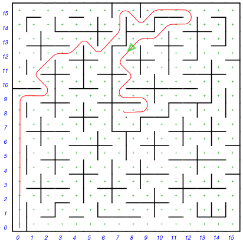
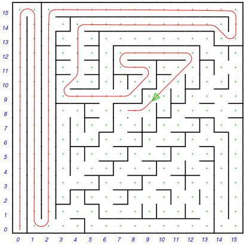

FrontPage
はじめに
このページでは趣味で製作したマイクロマウス「mm-6 / 7 / 8」の紹介をします。どれもカメラを搭載したマウスです。
2017年 mm-8b
2017年大会ではカメラの画像処理と走行制御の改良で、予選のゴールには到達できました。しかし、探索走行に時間を使いきって、最短走行ができず、予選は通過できませんでした。最短経路は計算できていたので、予選終了後に迷路を借りて走らせたところ、１７秒５で走行できました。
大会でmm8bが撮影した画像です→2017迷路画像
2016年 mm-8a
2016年大会に向けて、mm-8 を改良しました。mm-8 で用いたモーターのコギングが大きくて安定走行できなかったので，モーターを自作することにしました。→mm-8a 概要
モーターのコギングは改善出来たのですが、大会では残念ながら完走できず、リタイアとなりました。
試走会で初めて大きな迷路を走らせて，様々な課題がわかりました。やはりカメラマウスの宿命として環境光の影響を大きく受けるので画像処理には苦しんだのですが、基本的な走行制御に問題があって長距離走行できませんでした。
2015年 mm-8
第36回マイクロマウス大会、ハーフサイズ競技に参加しました。
ハーフサイズで初めてのカメラ搭載マウスです。
残念ながら安定走行出来る状態には至らず、予選リタイアとなりましたが、特別に決勝に進ませていただきました。
もちろん決勝までの一晩で大きくレベルアップするはずもなく、決勝でもリタイアとなりました。
それでもハーフサイズにカメラを組み込んで、曲がりなりにも壁を画像認識しながらある程度走行出来たことで，「特別賞」をいただきました。
今回安定走行に至らなかったのには、いくつも要因がありますが，走行用のモーターに使ったアウトランナーブラシレスモータが大きなコギングを持っていて，これを抑え込むことが出来なかったことが大きいです。
2014年 mm-7a
第35回マイクロマウス競技会に参加しました。
mm-7a はスタート位置からカメラを使って迷路を撮影し、画像処理で全迷路を解析するマイクロマウスです。2012年、2013年と同じ機体でソフトウェアの改良を重ねての参加です。mm-7のハード/ソフトはこちらを参照ください -> mm-7
予選の結果は 17秒693 25位 で決勝へ。
決勝の結果は 29秒302 21位 でした。
予選，決勝とも完走は出来ましたが，どちらも１、２回目の画像解析には失敗し、3度目にやっと成功しました。成功時の画像を見ると，100%すべての壁が判別できていました。
| 予選  | 決勝  |
上図は射影変換画像からmm-7aが解析した迷路と、走行ログから描いた走行ルートです。
解析失敗時の画像データが残っていないので失敗の原因は不明ですが、予選の後で予選迷路を試走させてもらい，解析失敗時の画像データを取得したところ、カメラを高く持ち上げたときのカメラの仰角が設定から1〜2°ほどずれており、画像処理の過程で補正しきれないことがわかりました。カメラリフトアップ機構にガタが出始めているようです。
また、予選の最短走行2回目にスピードを上げたところ直線の姿勢制御が不安定になり，壁に衝突。ログを見るとスピードがある値を越えたあたりからジャイロセンサーが大きなインパルス状のノイズを出していました。車体の振動でジャイロが誤動作したように見えます。
mm-7a の機体はカメラリフトアップ機構を積んでいるため 155g と重く，重心も高くなっています。また重心が駆動輪よりかなり前にあるためターン時のイナーシャも大きく，タイヤのスリップ限界が近いので大幅なスピードアップは難しくなっています。根本的な構造見直しが必要です。
mm-7a が撮影した迷路画像と画像処理結果→2014年迷路画像
2013年 mm-7a
mm-7a は mm-7 の改良バージョンです。第34回マイクロマウス競技会予選に参加しました。
今年はスタート位置からカメラを使って全迷路を解析し、一回目の走行で最短経路を走ってゴールまで完走することが出来ました。予選でのタイムは19.446秒で予選通過ラインに6.6秒及ばず決勝進出はなりませんでした。
ただ、完走が出来たことで、決勝開始前にエキジビション走行を行うことが出来ました。エキジビションでも全迷路解析は成功し、1回目の走行では斜め走行途中に壁に引っかかってしまいましたが、２回目は完走することが出来ました。
ロボット・ファン.net さんの動画
右の図は射影変換画像からmm-7aが解析した決勝迷路と、走行ログから描いた走行ルートです。
2ヶ所、壁の無い所に壁があるように誤判定していましたが、最短ルートから外れていたため結果はOKでした。昨年壁がある所を無いと判断し致命的だったため、壁判断アルゴリズムを安全方向に変更した結果です。
今回の会場の照明はかなり暗く、カメラのゲインが高いうえに照明の演色性が悪く、赤色チャネルのゲインがかなり上がっていました。このため赤色差画像のノイズが悪化しています。また射影変換画像を見ると、古くなって少し茶色に変色した壁が赤成分を持ち、壁と誤認識したようです。
カメラで全迷路を解析するコンセプトは30年以上前からあったと思いますが、実際に完走出来たのはおそらく世界初ではないかと思います。
結果「ニューテクノロジー賞」を頂くことが出来ました。
今年のマイクロマウス大会は一段と盛況でした。また特にロボトレース競技ではユニークな機体がたくさん見られ、楽しい大会でした。
mm-7a が撮影した迷路画像と画像処理結果→2013年迷路画像
mm-7aの改良ポイント→ mm-7a 概要
2012年 mm-7
mm-7 は2012年、第33回マイクロマウス競技会に参加しました。
スタート位置からカメラを使って全迷路を解析しようという大きなチャレンジを行いました。
スタート位置でカメラを高く持ち上げ、迷路全体を撮影します。画像処理によって全迷路を解析します。その後一気に最短走行する計画です。
予選で迷路を撮影後、最短経路を計算して走行しましたが、途中で壁にぶつかってリタイアに終わりました。
画像から解析した迷路の壁が何箇所か抜けており、ちょうど最短経路に当たっていました。

射影変換画像からmm-7が解析した迷路と、走行ログから描いた走行軌跡です。
カメラの視野は水平画角40°と小さいため、マウスの角度を左右に30°づつ変えながら3回撮影して迷路全体をカバーします。
また、カメラを持ち上げた状態では自分の足元の壁が見えないので、カメラを下ろしてからさらに3回撮影して計6枚の画像から迷路を解析します。
撮影して、画像処理が終わるまで約20秒かけて計算します。
１〜２箇所の壁検出ミスでしたが、ちょうど最短経路に当たっているため致命的です。
残念な結果に終わりましたが、もう少しで全迷路解析が出来そうな感触が得られました。
外光条件の変化に対する壁検出の信頼性向上と、検出ミスがあった場合に走行しながらマップを修復するなどの対策で、次回は完走を目指したいです。
mm-7 のハードウェアとソフトウェア→mm-7 の概要
mm-7 が撮影した迷路画像と画像処理結果→2012年迷路画像
2010年 mm-6
mm-6は、2010年11月に開かれた第31回マイクロマウス競技会に参加しました。予選で完走したものの、最短走行は失敗。決勝に進むことが出来ませんでした。
しかし、mm-6 の特徴のあるハードウエアは注目を集め、予選終了後と決勝開始前にデモ走行をさせていただきました。そして特別賞をいただきました。→mm-6の概要
決勝開始前のデモ走行。スラローム走行が危なっかしい。
敗因
mm-6 はビデオカメラで前方を撮影し、床面の黒と壁の白の輝度差を見て壁の有無や本体と壁との位置関係を見ています。競技会場の迷路の床はかなり使い込まれてテカっており、誤検出ぎみだったようです。また3輪の特性上スラローム走行しかできないのですが、スラロームしながらの誤差の修正が充分でなく、かなり危なっかしい走りをしていました。上の動画でも最後にスラローム連続で誤差を修正しきれず壁にぶつかって止まっています。
予選終了後のデモ走行では最短走行できたのですが、3回目速度を上げた最短走行をトライしたところ壁に激突。これは後でログを見てびっくり。10区画の直線走行の指示を出したところ、走行距離の計算がオーバーフローして1区画に満たないところで終了の判断をしていました。
自宅の調整迷路は5x6区画で、会場で初めてフルサイズを走らせて発覚。計算レンジの誤りという初歩的ミスはがっかりでした。
今後やりたいこと
今回は、なんとか完走できるくらいの走行制御をプログラムするのに精一杯でした。以下は今後の宿題です（いくつできるか？）
- 画像信号処理を、床や壁の反射率や会場の照明の変化に対してよりロバストにする
- 探索走行時、時間がかかっても誤差をしっかり修正しながら確実に走る
- 今回実現できなかった斜め走行の実装
- カメラの画像を活かした探索（前方に長い距離壁が無いことが検出できるので）
2011年 mm6A
2011年第32回マイクロマウス競技会に、mm-6を改造したmm-6Aで参加しました。
結果は予選で20〜30区画程度しか走行できず、リタイアとなりました。
敗因
壁の検出にはラインレーザーを前方に照射し、壁に投影した赤いラインをカメラで撮影する方式としてみました。これがうまくいかず壁の誤検出が多くなり、正確に走ることが出来ませんでした。
迷路の壁の上面は赤色なので、レーザーの赤いラインと壁上面の赤の分離が難しく、そもそも無理のあるやり方でした。
13911